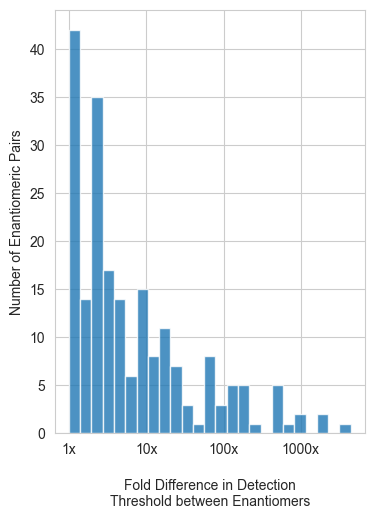

3rd Party Embeddings#
# Using 3rd party embeddings as features to the model
%matplotlib inline
import Utils as model_helpers
import numpy as np
import pandas as pd
from sklearn.preprocessing import StandardScaler
Computing Features
half_enantiomer_data = pd.read_csv("half_enantiomer_data.csv")
# Loads in embeddings from 3rd party model to use as features
gme = np.load('../data/thirdparty/enantiomer-embeddings-for-rick.npz', allow_pickle=True) # Load the file
gme = gme['embeddings'].item() # Extract the data
gme = {k: v.squeeze() for k, v in gme.items()} # Flatten the arrays
gme_df = pd.DataFrame(gme).T # Turn into a dataframe
gme_df.head()
| 0 | 1 | 2 | 3 | 4 | 5 | 6 | 7 | 8 | 9 | ... | 246 | 247 | 248 | 249 | 250 | 251 | 252 | 253 | 254 | 255 | |
|---|---|---|---|---|---|---|---|---|---|---|---|---|---|---|---|---|---|---|---|---|---|
| CC1(C)[C@H]2CC[C@H](CO)[C@@H]1C2 | 3.361583 | 0.382813 | 0.000000 | 0.000000 | 2.153011 | 1.410133 | 2.376704 | 0.0 | 0.765796 | 0.000000 | ... | 0.000000 | 0.331122 | 0.251479 | 0.697581 | 0.569553 | 0.785193 | 0.000000 | 3.134834 | 3.344208 | 0.000000 |
| CCCC[C@H](C(C)C)[C@H](O)CC | 1.591573 | 0.000000 | 0.428940 | 1.412535 | 0.304237 | 4.056973 | 2.067844 | 0.0 | 0.000000 | 0.145670 | ... | 0.000000 | 0.000000 | 0.000000 | 0.664556 | 1.274769 | 0.000000 | 0.200347 | 2.116929 | 0.000000 | 0.557281 |
| CCCCCCCC[C@@H](C)O | 0.222926 | 0.000000 | 0.223172 | 0.000000 | 0.000000 | 5.710248 | 2.740240 | 0.0 | 1.230071 | 0.000000 | ... | 0.801922 | 0.000000 | 0.000000 | 0.000000 | 0.000000 | 0.000000 | 0.000000 | 1.291554 | 0.525811 | 2.257053 |
| CC1(C)[C@H]2CC[C@](C)(C2)[C@H]1O | 2.282184 | 0.912073 | 0.000000 | 0.000000 | 2.890187 | 0.176412 | 2.256818 | 0.0 | 0.569661 | 0.000000 | ... | 0.101928 | 0.000000 | 0.340307 | 1.982442 | 0.941730 | 0.164528 | 0.000000 | 3.065782 | 2.076539 | 0.000000 |
| C=C1CC[C@@H](C)C(C)(C)[C@@H]1/C=C/C(C)=O | 3.561810 | 0.000000 | 0.271860 | 3.111673 | 0.000000 | 0.742194 | 2.071393 | 0.0 | 0.000000 | 0.158586 | ... | 0.771586 | 0.000000 | 0.000000 | 0.382187 | 0.000000 | 1.091824 | 1.321833 | 0.000000 | 0.289515 | 0.716665 |
5 rows × 256 columns
# Make copy of original data and set the index to match that of the gme model
half_enantiomer_data_copy = half_enantiomer_data
half_enantiomer_data_copy = half_enantiomer_data_copy.set_index("SMILES String")
# Keep the columns in the gme df that match the index names in original dataset
common_index = half_enantiomer_data_copy.index.intersection(gme_df.index)
half_enantiomer_data_copy = half_enantiomer_data_copy.loc[common_index]
gme_df = gme_df.loc[common_index]
# Combine original dataset with gme df
g_model_embeddings = half_enantiomer_data_copy.join(gme_df, how="inner")
# Reset the index to be "Moecule Name"
g_model_embeddings = g_model_embeddings.set_index("Molecule Name")
g_model_embeddings.head()
| Unnamed: 0 | Unnamed: 0.1 | Pubchem ID # | Note | Other SMILES | Method | Contributor | Detection Threshold | Detection Units | Normalized Detection Threshold | ... | 246 | 247 | 248 | 249 | 250 | 251 | 252 | 253 | 254 | 255 | |
|---|---|---|---|---|---|---|---|---|---|---|---|---|---|---|---|---|---|---|---|---|---|
| Molecule Name | |||||||||||||||||||||
| (R)-(-)- muscone/(R)--3-methyl cyclopentadecanone | 20 | 20 | 7160826 | NaN | NaN | NaN | NaN | 6.10E+01 | ppb | 61.00 | ... | 0.000000 | 0.000000 | 0.245207 | 0.000000 | 0.000000 | 0.000000 | 2.003086 | 0.000000 | 2.417500 | 0.000000 |
| (S)-(+)-2-methylbutanal | 42 | 42 | 6971249 | NaN | NaN | NaN | NaN | 1.00E+01 | ppm in air | 10000.00 | ... | 0.000000 | 0.866084 | 1.189604 | 1.203395 | 2.965221 | 0.000000 | 0.000000 | 2.632849 | 0.000000 | 0.000000 |
| ( 1S,5S)-(-)-\\xce\\xb1-Pinene | 64 | 64 | 440968 | Changed from PubChem ID 6654 | CC1=CC[C@H]2C[C@@H]1C2(C)C | Different PubChem ID | DW | 1.00E-01 | ppb | 0.10 | ... | 1.348683 | 0.000000 | 0.685428 | 0.290208 | 0.000000 | 0.000000 | 0.000000 | 0.955723 | 3.763213 | 0.000000 |
| (1R,3S,4S)-(+)-neomenthol | 96 | 96 | 439263 | NaN | CC(C)[C@@H]1CC[C@@H](C)C[C@@H]1O | ChemDraw + Cactus | DW | 8.10E-01 | ppb | 0.81 | ... | 0.000000 | 0.000000 | 0.204114 | 1.303833 | 2.614392 | 0.249996 | 0.000000 | 3.942642 | 1.846398 | 0.000000 |
| (3S)-(-)-dihydrocitronellol | 106 | 106 | 92283029 | NaN | CC(C)CCC[C@@H](C)CCO | ChemDraw + Cactus | DW | 2.50E+02 | ppb | 250.00 | ... | 1.637907 | 0.000000 | 0.000000 | 0.000000 | 0.000000 | 0.000000 | 0.000000 | 1.083949 | 1.556027 | 2.074914 |
5 rows × 271 columns
assert ((g_model_embeddings.iloc[:,15:].var() <= 0).sum() == 0), "This should be 0 if not, get rid of columns with 0 varience"
Model
# Illustrate the magnitude differences across enantiomeric pairs in the dataset
model_helpers.fold_difference_of_enantiomers(half_enantiomer_data)

x_gme = g_model_embeddings.iloc[:,15:]
y_gme = g_model_embeddings["log_abs"]
Xn_gme = pd.DataFrame(StandardScaler().fit_transform(x_gme), index=x_gme.index, columns=x_gme.columns)
model_helpers.create_model(Xn_gme, y_gme)
100%|██████████| 13/13 [00:02<00:00, 4.60it/s]